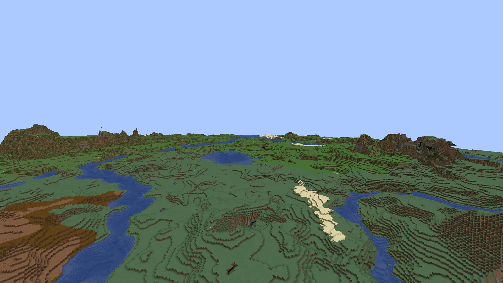

Voxy only draws distant terrain for chunks you've already loaded. Voxy Speed Gen generates that terrain in the background, around every player, so the horizon fills in without anyone flying out to explore it.
A Fabric mod. Voxy is needed wherever LODs are shown, which means on each player's client.
What goes where
Voxy Speed Gen
Fabric API
Voxy + Sodium
Mod Menu
Singleplayer
Required
Required
Required
Optional
Dedicated server
Required
Required
Not needed
–
Player on a server
To receive LODs
Required
To receive LODs
Optional
Players without the mod can still join a server that runs it. They just don't receive LODs.
Steps
Download the jar for your Minecraft version (see Versions).
Put it in .minecraft/mods with Fabric API, Voxy and Sodium.
Start the game and join a world. Generation starts on its own.
Conflicts
Conflict
Voxy WorldGen generates the same chunks, so the two shouldn't run together. The mod declares the conflict, and Fabric Loader warns you at startup. Remove one.
Chunky works alongside it, but you may not need it: there's a built-in pregenerator.
Coming from Voxy Surface Gen
The mod was called Voxy Surface Gen before release. Old config and world data move to the new name on first launch.
A real chunk has to wait for its eight neighbours to run carvers and features, and is then saved to disk. Fast mode skips that. On a temporary chunk that is never saved, it runs only the stages that decide what you see from far away:
It uses the same generator as Minecraft, so the terrain lines up with real chunks generated later, without a seam.
Height band
Fast mode only generates a vertical slice around the surface, since rock below and air above don't show in LODs. Columns that don't fit (tall peaks, deep lakes) fall back to full height automatically. There's no setting for this.
Exceptions
Situation
What happens
Chunks you've already explored
Read from your save, never approximated (Use Explored Terrain)
Tellus and other non-noise generators
Fast mode runs the generator's own terrain stages. With Vanilla trees, Tellus places its own trees from real-world data, the same ones real chunks get. Other generators like this get the Simple look-alikes.
Accuracy
With the vanilla world generator, the mod's own tests found the terrain surface within 2 blocks of real chunks in about 99% of columns. The visible top block differs more, mostly because of trees and small features. Worldgen mods can change this; measure your own world with /vsg verify.
Without trees, forests look like bare green hills. This setting adds trees, snow and ice to Fast terrain.
Options
Setting
You get
Cost
Vanilla default
Minecraft's own trees: same species, shapes and density. Vanilla snow and ice.
Slowest of the three
Simple
Look-alike trees of the right type and density, in random spots. Snow and ice.
About the same as Off
Off
Bare terrain. Rivers stay unfrozen.
Cheapest
Trees by distance
With Vanilla on, two circles on the Distances map change the trees further out:
Circle
Past it
Default
Simple Trees From
Simple trees instead of Vanilla. You can't tell them apart that far out, and they're much faster to make.
On, 256 chunks
No Trees From
No trees at all. The fastest, for very large distances.
Off, 512 chunks
Turn a circle off to keep that kind of tree all the way out.
Side by side

OffVanilla
Drag to compare. The same untouched forest, generated with Off and then Vanilla. Render distance 2, so nearly everything in view is LODs.
Off bare hillsSimple look-alikes, random spotsVanilla Minecraft's own trees
Snow and ice
Off the river stays open, banks stay greenVanilla frozen river, snow on ground and trees
How close Vanilla trees are
Species, shapes and density match real generation. Exact positions don't always: vanilla places trees in chunk-load order, which a temporary chunk can't reproduce. Most trees land within a few blocks of where vanilla puts them, which you can't tell apart from a distance.
Note
Changing this setting makes saved terrain from the old setting be regenerated rather than reused.
The Overworld is always generated. The Nether and the End have their own switches. Turn off modded dimensions in the config file, for example "disabledDimensions": ["mymod:skylands"].
A map of the area around you, seen from above, on the Overview tab. Every distance the mod uses is a circle on it: drag a circle to change it, click a name to turn it on or off.
The map in Balanced mode. The filled area shows which trees you get where.
The circles
Circle
What it sets
Can turn off
Default
LOD Distance
How far around you LODs are made. Same as the slider above it.
No
128 chunks
Real Chunk Distance
Balanced mode only: real chunks inside it, fast terrain outside
No
24 chunks
Upgrade Distance
Once everything is done, fast terrain inside it is slowly replaced with real chunks. More
Tellus builds the real Earth from map data it downloads. Voxy Speed Gen works with it out of the box and has a few extra tricks to make Earth-sized distances practical.
Rough Horizon First
Before filling in any detail, it covers your whole LOD Distance in rough terrain made of 16-block cubes: one cube per chunk section, coloured by the ground, water and biome there. It only needs one map sample per chunk and doesn't build chunks at all, so it's several times faster than the normal fill. In testing it covered a 256-chunk radius (about 205,000 chunks) in around 2 minutes.
The normal fill keeps going at the same time, from you outward, and replaces the cubes chunk by chunk. By the time you get close to an area, the cubes there are gone.
The cubes are never counted as done: the progress bar, map shading and Skip Existing LODs only count real LODs.
Only for your own game (singleplayer, or the host of a LAN world). It leaves out the 32 chunks around you, which the normal fill reaches in seconds anyway.
Switch: Rough Horizon First (Tellus) on the Generation tab, or /vsg set giantFar false.
Low Detail
Past the Low Detail circle on the Distances map, terrain is made from Tellus's lower-detail map data instead of its full terrain step: fewer downloads and much less work per chunk. It's around 1.5 to 1.8 times faster. Roads and buildings aren't drawn that far out, and you couldn't see them from there anyway.
If your Tellus version supports it, map data is also requested ahead of time as chunks are queued, so it's already downloaded when they're generated.
Trees
With trees on Vanilla, Tellus worlds get Tellus's own trees, so forests are where they are on the real Earth. Simple trees and the tree circles work as in any other world.
Memory
Tellus's terrain step normally makes the game load nearby chunks to check for structures. Voxy Speed Gen gives it an empty structure list instead, so generating far away doesn't fill your memory with loaded chunks.
Fast terrain isn't in your world save, so the mod keeps its own compressed copy. Voxy can be refilled from it without generating again.
When it's used
Voxy was switched off while you played.
Voxy's cache was deleted.
Another player on a server needs the same area.
Automatic refill
When your Voxy comes online, the mod spot-checks that Voxy still has what it was given. If most of it is missing, it refills from saved terrain automatically. The check is skipped in End-like dimensions.
While Voxy is off
In singleplayer, nothing is generated while Voxy is off or starting up, and the HUD says waiting for Voxy. Generation carries on once Voxy runs.
Related settings
Setting
Default
Effect
Skip Existing LODs
On
Doesn't regenerate what Voxy already stores, for example after reinstalling this mod
Keep Generated Terrain
On
Saves Fast terrain as described above
Start over
/vsg forget all # everyone/vsg forget <player> # one player
Resends everything. With saved terrain on, the refill is read from disk.
Work harder while nobody's playing, back off during combat or low FPS, and optionally replace Fast terrain with real chunks later.
Idle boost
Speeds up when
Where
Setting
Every player has been idle for 60 s
Anywhere
Count as AFK After
The pause menu (or any screen) is open
Singleplayer
While Paused
The game window is in the background
Singleplayer
While in Background
It adds threads and parallel jobs by Boost Amount (2×, up to 4×). While paused, only Fast terrain continues. The HUD shows boosted x2 (idle).
Slowing down
Drops to a quarter when
Where
Setting
A player is fighting or taking damage
Anywhere
During Combat
Your FPS is below 30
Singleplayer
At Low FPS (0 = off)
Surface first, then upgrade
Off by default. Once your area has Fast terrain, it's replaced with real chunks, nearest first, within Upgrade Distance (32 chunks) at up to Upgrade Speed (10 per second). With Only While AFK on (default), this only happens while everyone is idle. The HUD shows a second bar for it.
Note
Upgraded chunks are real chunks, so they're written to your world save.
Shade LOD areas on Xaero's World Map or JourneyMap. More
On
Multiplayer
Send LODs to PlayerssendToClients
Stream LODs to players who have Voxy
On
Upload Speed per PlayermaxColumnsPerSecondPerPlayer
Bandwidth limit per player. Lower it if players lag on join.
80/s
Servers
The server generates LODs and streams them to every player who has this mod and Voxy.
Setup
Install Voxy Speed Gen and Fabric API on the server.
Players who want LODs install Voxy Speed Gen, Voxy and Sodium.
Optional: set Distance Limit, and pregenerate with /vsg pregen.
How it works
Shared work
Players standing together cost one generation, not two.
Remembers deliveries
Tracked per player, so rejoining only sends what's missing.
Edits
When players change a chunk, others who had that LOD get the new version.
Saved terrain
Late joiners are served from disk instead of regenerating.
Personal distance
Each player's Your LOD Distance is a request, capped by Distance Limit.
Bandwidth
Upload Speed per Player caps what each player receives: at the default 80 chunks per second, at most 4,800 chunks a minute. Lower it if players lag when joining. A singleplayer or LAN host is served by their own Voxy directly and isn't limited by it.
Permissions
Who
Can
Everyone
/vsgc, /vsg (status), /vsg config; their own HUD, map shading and distance
Operators (level 2)
All /vsg commands; the server's settings in the settings screen (the server re-checks each change)
Singleplayer host
Everything, even with cheats off
Settings screen on a server
Operator: changes are sent to the server on close.Everyone else: the server's settings, read-only.
The server's config/voxy_speed_gen.json controls generation. Each player's own copy controls their HUD, map shading and distance request.
How fast it generates depends on your CPU, your mods and these settings. Balanced suits most PCs, so start there.
Profiles
Profile
For
CPU threads
Fast jobs
Real jobs
Tick budget
Voxy backlog
Low
Laptops, busy servers
a sixth of your cores
8
8
30 ms
10k
Balanceddefault
Most PCs
Auto
32
32
40 ms
30k
High
Desktops with cores to spare
half your cores
64
64
45 ms
60k
Max
While AFK or pregenerating
all but two cores
128
96
50 ms
120k
Tip
Higher isn't always faster. Voxy needs spare CPU to process what it receives. On CPUs with fewer cores, too many generator threads starve it and LODs appear more slowly. Compare surface/s with into Voxy/s on the detailed HUD: if the second falls behind, go down a profile.
Built-in throttles
Tick budget
New work waits while the server tick is over Pause If Tick Over
Voxy backlog
New work waits while Voxy's queue is over Voxy Catch-up Limit
Own threads
Fast terrain runs on its own low-priority threads, not the game's world-generation threads
Voxy's queue never uses more than about 15% of your memory, whatever the settings. Above 70% memory use it backs off and clears its own caches; above 85% it pauses until memory is free again.
Replays
Stays idle while Flashback plays back or exports a replay
Symptoms
Symptom
Try
Stutter while generating
Profile Low, or raise At Low FPS
Fans loud while playing
Profile Low; Idle Boost catches up while you're AFK
HUD often says server busy
The server is already loaded; raise Pause If Tick Over slightly, or accept a slower fill
One head-to-head test of how quickly each generator filled Voxy, all on the same PC and world.
Read first
These numbers come from one test setup. Your speed depends on your CPU, your mods and your settings, so expect different absolute numbers. What carries over is the order: which approach fills Voxy faster than which.
Replay
64-chunk radius, 12,744 chunks
VSG FastVSG Real ChunksOther mods
0 s
Replayed at 15× from the completion times measured in this setup. The square in the middle is the render distance, which the game loads itself.
Results in this setup
Generator
Rate into Voxy
64-chunk radius
Server ms/tick
VSG Fast, trees off
~270 /s
100% at 50 s
2.5
VSG Fast, Vanilla trees (default)
~205 /s
100% at 70 s
2.1
VSG Real Chunks, 64 parallel (High)
~90 /s
100% at ~185 s
4.4
VSG Real Chunks, 32 parallel (default)
~75 /s
98.5% after 3 min
5.7
Chunky 1.5.3 (Voxy's Chunky hook)
~94 /s
98.9% after 3 min
4.0
Voxy WorldGen 2.4.3
~24 /s
34% after 3 min
3.6
What carries over
Fast mode filled Voxy several times faster than any of the tools generating real chunks.
For real chunks, Real Chunks mode and Chunky were about even; both are limited by Minecraft's own chunk pipeline.
Chunky skips chunks that already exist, so Voxy never gets them. Set Chunky's forceLoadExistingChunks to true. Voxy Speed Gen doesn't have this problem, because it also sends existing chunks to Voxy.
Common questions. Several "it looks wrong" reports come from Voxy's renderer, not this mod.
Fog starts right past my render distance
That's Voxy's Fog and fade effect setting. Set it to "Fade only" or "Off". Voxy Extra's Custom Fog Fade can push it further out.
Far terrain shimmers or pops
That's Voxy's renderer, and it looks the same whichever tool made the LODs. Shaders with TAA help.
Trees move slightly when I get close
Vanilla trees in Fast mode match species and density but not every position. Real chunks replace the LOD when they load. See tree accuracy.
I turned Voxy off. Is that terrain lost?
No. The mod waits while Voxy is off, and refills from saved terrain when it's back.
How much disk does it use?
In Fast mode, nothing in your region files. Saved terrain goes in <world>/data/voxy_speed_gen/terrain/, and /vsg shows its size. Voxy's own cache grows with LOD Distance, whatever fills it.
Does it work with worldgen mods?
Noise-based ones usually do; check with /vsg verify. Others, such as Tellus, run their own terrain stages in Fast mode. If that keeps failing for a generator, it switches to real chunks by itself.
LODs disappear when I turn on a shader pack
On Minecraft 26.2, Iris 1.11.4 hid Voxy's LODs with every shader pack. This mod fixes that, and lines LOD water and fog up with the real chunks. The shader pack still needs its own Voxy support: BSL, Complementary Reimagined and Unbound, and Photon have it; Bliss 2.1.2 doesn't.
I changed the tree setting, but areas I'd already filled look the same
Areas Voxy already has are skipped. Turn off Skip Existing LODs, run /vsg forget all, and the mod fills them again with the new setting.
Voxy Speed Gen 1.0.3 · MIT. Voxy is All-Rights-Reserved and never bundled. Screenshots were taken in game with default settings unless a caption says otherwise.